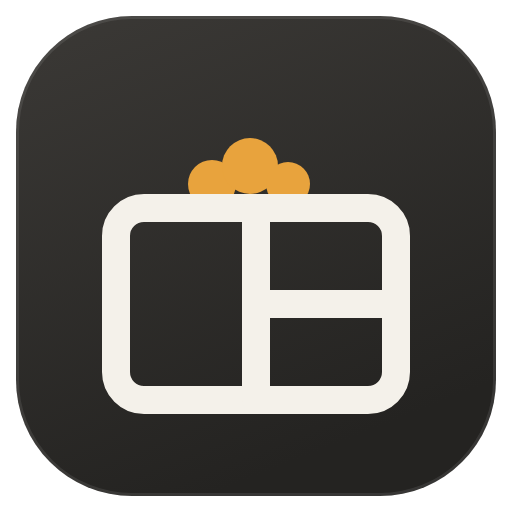

Paste this into PowerShell. It downloads each program's source, builds it on your machine and installs it for your user. No administrator rights needed.
irm https://despale-code.github.io/chickenwm/install.ps1 | iex
Win + R and the ChickenWM launcher can find it.Each program lives in its own repository. They talk to each other over a named pipe, and the daemon, rooster, starts and supervises them.
Set these before running the command:
$env:CHICKENWM_COMPONENTS = "henbrowser,chickenwm-files"$env:CHICKENWM_ALL = "1" — every optional program$env:CHICKENWM_YES = "1" — no questions$env:CHICKENWM_DIR = "D:\Apps\ChickenWM"Ctrl + Alt + Shift + Esc is the emergency restore: it puts Explorer back and stops ChickenWM. Uninstalling also restores Explorer first. Your settings stay in %USERPROFILE%\.config\chickenwm.